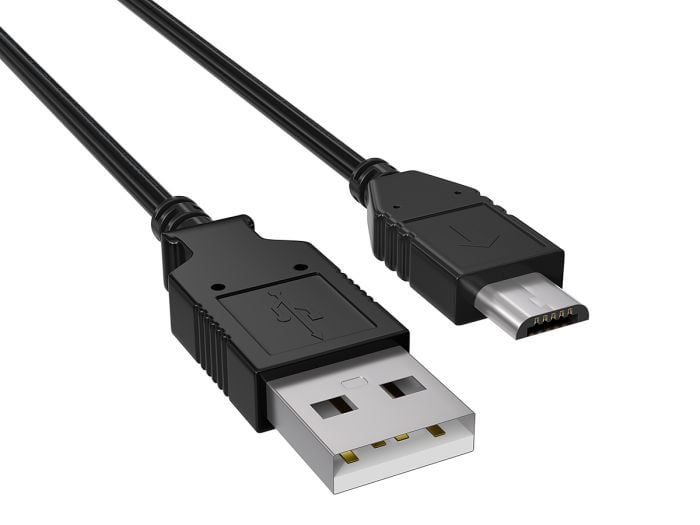
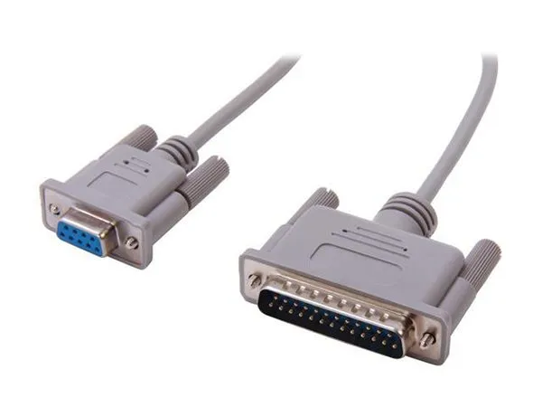
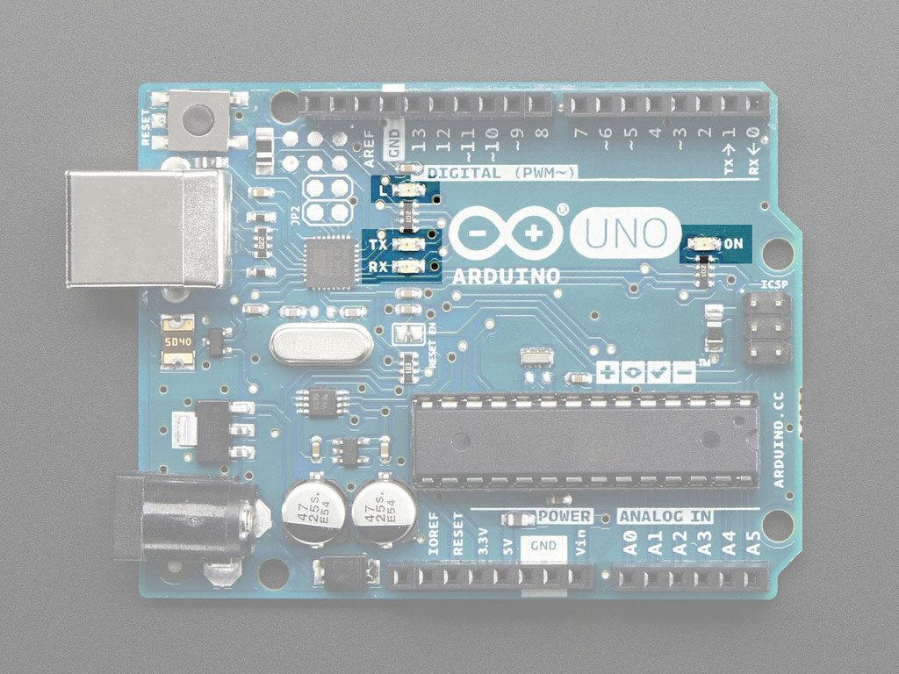
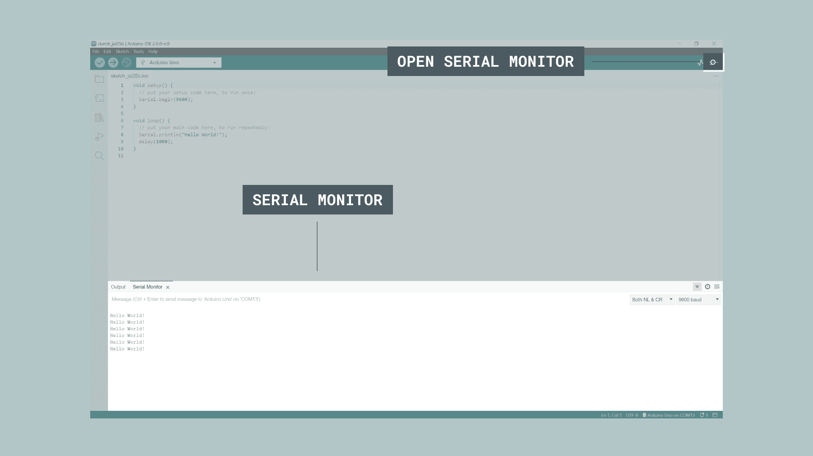

First, think back to when we were learning the Arduino software graphical user interface (GUI). To upload our code we learned how to make sure of two things:
The port that we are connected to is the “Serial Port”. The serial port is used to achieve a communication between the computer and the Arduino board using a process called “Serial Communication”. You can think of it as both your computer and your Arduino board having a conversation, where they take turns sending messages to each other.
Serial Cables
Serial cables today (USB)

Serial cables back then (RS-422)

You can actually see some visual feedback of the communication by looking at some board’s RX and TX LEDs. The RX LED blinks when the board is (r)eceiving information from the computer, and the TX LED blinks when the board is (t)ransmitting information to the computer.

To see the actual messages the Arduino is sending to our computer, we use the Serial Monitor.
The Serial Monitor can be accessed by clicking on the magnifying glass icon in the top right corner of the Arduino IDE, and the Serial Monitor window will pop up on the bottom of the screen.

Note
Check out the official Arduino documentation on the Serial Monitor: Serial Monitor: Arduino Documentation
Makeabilitylab has a more in-depth post about the serial monitor.
Check it out here: Intro the Serial Monitor
How to use Debug with Serial: Debugging with Serial